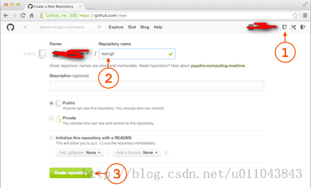
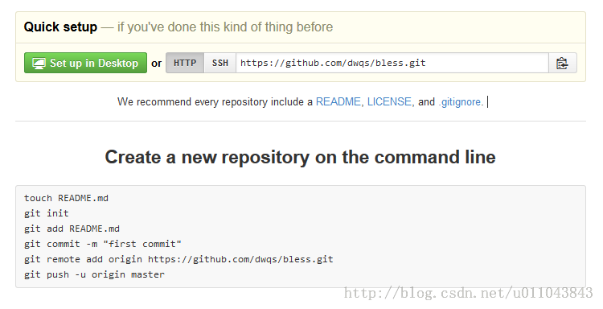
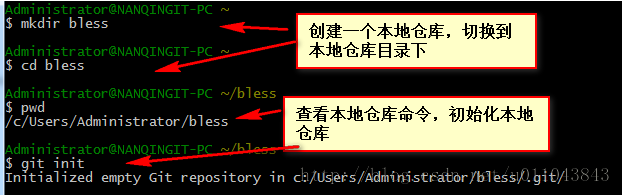
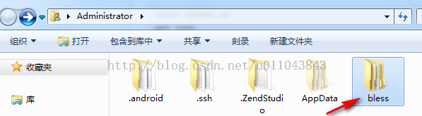
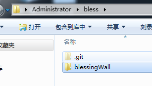
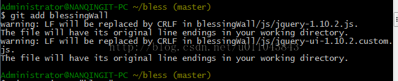
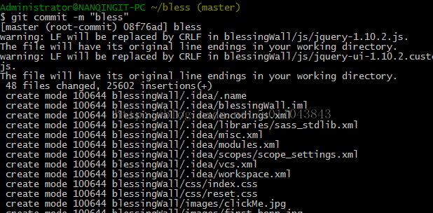
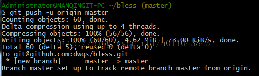
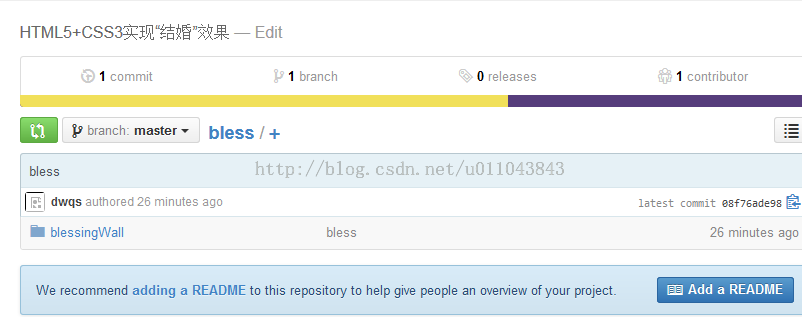

Git是现在最流行的版本控制系统之一了，今天也试试了，成功了上传了远程仓库，接下来看看我是怎么做的。
（ps:七牛抓取不到图片，请移步：http://blog.csdn.net/u011043843/article/details/33336625)
1、首先，要有git的账号，点击查看怎么注册？
2、注册成功之后，登陆GitHub，然后，在右上角找到“Create a new repo”按钮，创建一个新的仓库：

在Repository name填入bless，其他保持默认设置，点击“Create repository”按钮，就成功地创建了一个新的Git仓库：

2、在Git bash下创建并初始化本地仓库


3、找到要上传到远程仓库的项目文件，放入到bless目录下面或其子目录下面

.git是git init命令后自动创建的，不用管
4、将远程仓库与本地仓库关联
dwqs/bless.git分别用你们注册的账户名和创建的远程仓库名代替，其他不变。嘿嘿，不然就上传到我的仓库来了
5、将项目添加到本地仓库

该命令之后，项目被添加到暂存区，然后必须利用git的命令提交，

-m 之后的相当于注释部分
6、然后，推送到远程仓库

由于远程库是空的，我们第一次推送master分支时，加上了-u参数，Git不但会把本地的master分支内容推送的远程新的master分支，还会把本地的master分支和远程的master分支关联起来，在以后的推送或者拉取时就可以简化命令。
查看结果

从现在起，只要本地作了提交，就可以通过命令：
git push origin master把本地master分支的最新修改推送至GitHub，现在，你就拥有了真正的分布式版本库！
my git
转载请注明：淡忘~浅思 » Git实现从本地添加项目到远程仓库